Causal trees. Treatment effects estimation with synthetic data
Contents
Causal trees. Treatment effects estimation with synthetic data#
import pandas as pd
import numpy as np
import multiprocessing as mp
from collections import defaultdict
np.random.seed(42)
from sklearn.model_selection import train_test_split
from sklearn.linear_model import LinearRegression
from sklearn.tree import DecisionTreeRegressor
import causalml
from causalml.metrics import plot_gain, plot_qini, qini_score
from causalml.dataset import synthetic_data
from causalml.inference.tree import plot_dist_tree_leaves_values, get_tree_leaves_mask
from causalml.inference.meta import BaseSRegressor, BaseXRegressor, BaseTRegressor, BaseDRRegressor
from causalml.inference.tree import CausalRandomForestRegressor
from causalml.inference.tree import CausalTreeRegressor
from causalml.inference.tree.plot import plot_causal_tree
import matplotlib.pyplot as plt
import seaborn as sns
%config InlineBackend.figure_format = 'retina'
causalml.__version__
'0.13.0'
# Simulate randomized trial: mode=2
y, X, w, tau, b, e = synthetic_data(mode=2, n=10000, p=20, sigma=5.0)
df = pd.DataFrame(X)
feature_names = [f'feature_{i}' for i in range(X.shape[1])]
df.columns = feature_names
df['outcome'] = y
df['treatment'] = w
df['treatment_effect'] = tau
df.head()
| feature_0 | feature_1 | feature_2 | feature_3 | feature_4 | feature_5 | feature_6 | feature_7 | feature_8 | feature_9 | ... | feature_13 | feature_14 | feature_15 | feature_16 | feature_17 | feature_18 | feature_19 | outcome | treatment | treatment_effect | |
|---|---|---|---|---|---|---|---|---|---|---|---|---|---|---|---|---|---|---|---|---|---|
| 0 | 0.496714 | -0.138264 | 0.358450 | 1.523030 | -0.234153 | -0.234137 | 1.579213 | 0.767435 | -0.469474 | 0.542560 | ... | -1.913280 | -1.724918 | -0.562288 | -1.012831 | 0.314247 | -0.908024 | -1.412304 | -4.930072 | 0 | 1.123117 |
| 1 | 1.465649 | -0.225776 | 1.239872 | -1.424748 | -0.544383 | 0.110923 | -1.150994 | 0.375698 | -0.600639 | -0.291694 | ... | -1.057711 | 0.822545 | -1.220844 | 0.208864 | -1.959670 | -1.328186 | 0.196861 | -5.082494 | 1 | 2.052266 |
| 2 | 0.738467 | 0.171368 | 0.909835 | -0.301104 | -1.478522 | -0.719844 | -0.460639 | 1.057122 | 0.343618 | -1.763040 | ... | 0.611676 | 1.031000 | 0.931280 | -0.839218 | -0.309212 | 0.331263 | 0.975545 | -4.342033 | 1 | 1.520964 |
| 3 | -0.479174 | -0.185659 | 0.000000 | -1.196207 | 0.812526 | 1.356240 | -0.072010 | 1.003533 | 0.361636 | -0.645120 | ... | 1.564644 | -2.619745 | 0.821903 | 0.087047 | -0.299007 | 0.091761 | -1.987569 | -3.710049 | 1 | 0.125446 |
| 4 | -0.219672 | 0.357113 | 0.137441 | -0.518270 | -0.808494 | -0.501757 | 0.915402 | 0.328751 | -0.529760 | 0.513267 | ... | -0.327662 | -0.392108 | -1.463515 | 0.296120 | 0.261055 | 0.005113 | -0.234587 | 3.102884 | 0 | 0.667889 |
5 rows × 23 columns
# Look at the conversion rate and sample size in each group
df.pivot_table(values='outcome',
index='treatment',
aggfunc=[np.mean, np.size],
margins=True)
| mean | size | |
|---|---|---|
| outcome | outcome | |
| treatment | ||
| 0 | 0.718070 | 4981 |
| 1 | 1.524558 | 5019 |
| All | 1.122846 | 10000 |
sns.kdeplot(data=df, x='outcome', hue='treatment')
plt.show()

# Split data to training and testing samples for model validation (next section)
df_train, df_test = train_test_split(df, test_size=0.2, random_state=111)
n_test = df_test.shape[0]
n_train = df_train.shape[0]
# Table to gather estimated ITEs by models
df_result = pd.DataFrame({
'outcome': df_test['outcome'],
'is_treated': df_test['treatment'],
'treatment_effect': df_test['treatment_effect']
})
CausalTreeRegressor#
Available criteria for causal trees:
standard_mse: scikit-learn MSE where node values store \(E_{node_i}(X|T=1)-E_{node_i}(X|T=0)\), treatment effects.
causal_mse: The criteria reward a partition for finding strong heterogeneity in treatment effects and penalize a partition that creates variance in leaf estimates.
https://www.pnas.org/doi/10.1073/pnas.1510489113
ctrees = {
'ctree_mse': {
'params':
dict(criterion='standard_mse',
control_name=0,
min_impurity_decrease=0,
min_samples_leaf=400,
groups_penalty=0.,
groups_cnt=True),
},
'ctree_cmse': {
'params':
dict(
criterion='causal_mse',
control_name=0,
min_samples_leaf=400,
groups_penalty=0.,
groups_cnt=True,
),
},
'ctree_cmse_p=0.1': {
'params':
dict(
criterion='causal_mse',
control_name=0,
min_samples_leaf=400,
groups_penalty=0.1,
groups_cnt=True,
),
},
'ctree_cmse_p=0.25': {
'params':
dict(
criterion='causal_mse',
control_name=0,
min_samples_leaf=400,
groups_penalty=0.25,
groups_cnt=True,
),
},
'ctree_cmse_p=0.5': {
'params':
dict(
criterion='causal_mse',
control_name=0,
min_samples_leaf=400,
groups_penalty=0.5,
groups_cnt=True,
),
},
}
# Model treatment effect
for ctree_name, ctree_info in ctrees.items():
print(f"Fitting: {ctree_name}")
ctree = CausalTreeRegressor(**ctree_info['params'])
ctree.fit(X=df_train[feature_names].values,
treatment=df_train['treatment'].values,
y=df_train['outcome'].values)
ctrees[ctree_name].update({'model': ctree})
df_result[ctree_name] = ctree.predict(df_test[feature_names].values)
Fitting: ctree_mse
Fitting: ctree_cmse
Fitting: ctree_cmse_p=0.1
Fitting: ctree_cmse_p=0.25
Fitting: ctree_cmse_p=0.5
df_result.head()
| outcome | is_treated | treatment_effect | ctree_mse | ctree_cmse | ctree_cmse_p=0.1 | ctree_cmse_p=0.25 | ctree_cmse_p=0.5 | |
|---|---|---|---|---|---|---|---|---|
| 207 | -6.226016 | 0 | 2.434805 | 2.480459 | 3.397972 | 1.593823 | 1.593823 | 2.148150 |
| 1866 | 0.722683 | 0 | 0.359669 | 0.036291 | 0.275478 | 0.423639 | 0.423639 | -0.496591 |
| 9487 | 6.190585 | 1 | 0.031169 | 0.346871 | 0.765512 | 0.423639 | 0.423639 | -0.600022 |
| 3673 | -2.054093 | 0 | 1.780163 | 0.944471 | -0.048197 | 1.744129 | 1.744129 | 1.484378 |
| 7178 | 13.723378 | 1 | 1.352523 | 0.747913 | -1.348307 | 1.479139 | 1.479139 | 0.406058 |
# See treatment effect estimation with CausalTreeRegressor vs true treatment effect
n_obs = 200
indxs = df_result.index.values
np.random.shuffle(indxs)
indxs = indxs[:n_obs]
plt.rcParams.update({'font.size': 10})
pairplot = sns.pairplot(df_result[['treatment_effect', *list(ctrees)]])
pairplot.fig.suptitle(f"CausalTreeRegressor. Test sample size: {n_obs}" , y=1.02)
plt.show()

Plot the Qini chart#
plot_qini(df_result,
outcome_col='outcome',
treatment_col='is_treated',
treatment_effect_col='treatment_effect',
figsize=(5,5)
)
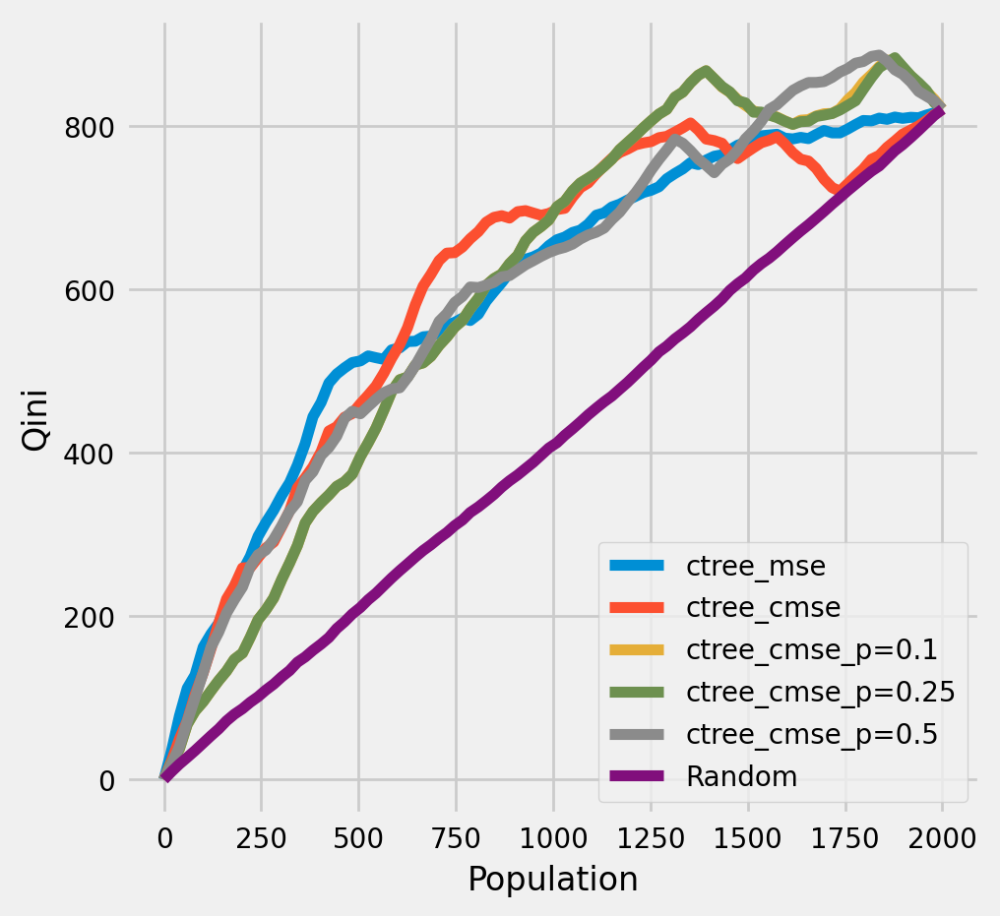
df_qini = qini_score(df_result,
outcome_col='outcome',
treatment_col='is_treated',
treatment_effect_col='treatment_effect')
df_qini.sort_values(ascending=False)
ctree_cmse 0.234977
ctree_cmse_p=0.5 0.228068
ctree_cmse_p=0.1 0.226806
ctree_cmse_p=0.25 0.226301
ctree_mse 0.226242
Random 0.000000
dtype: float64
The cumulative gain of the true treatment effect in each population#
plot_gain(df_result,
outcome_col='outcome',
treatment_col='is_treated',
treatment_effect_col='treatment_effect',
n = n_test,
figsize=(5,5)
)

The cumulative difference between the mean outcomes of the treatment and control groups in each population#
plot_gain(df_result,
outcome_col='outcome',
treatment_col='is_treated',
n = n_test,
figsize=(5,5)
)

Plot trees with sklearn function and save as vector graphics#
for ctree_name, ctree_info in ctrees.items():
plt.figure(figsize=(20,20))
plot_causal_tree(ctree_info['model'],
feature_names = feature_names,
filled=True,
impurity=True,
proportion=False,
)
plt.title(ctree_name)
plt.savefig(f'{ctree_name}.svg')


How values in leaves of the fitted trees differ from each other:#
for ctree_name, ctree_info in ctrees.items():
plot_dist_tree_leaves_values(ctree_info['model'],
figsize=(3,3),
title=f'Tree({ctree_name}) leaves values distribution')
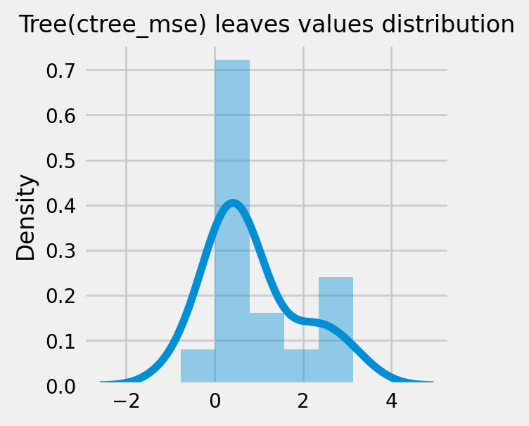
 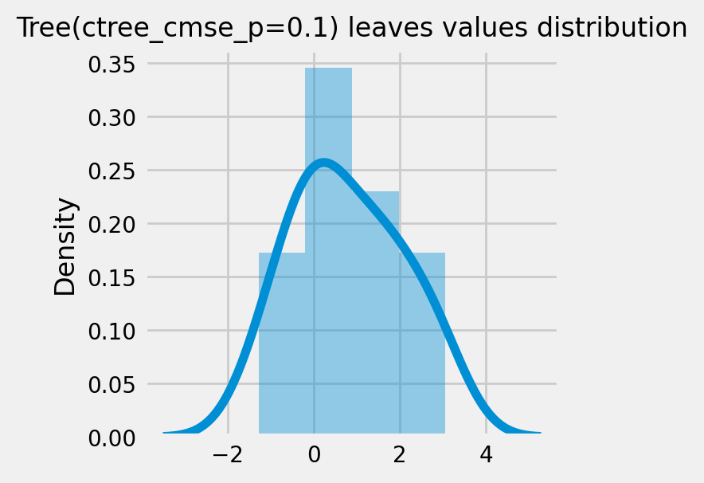
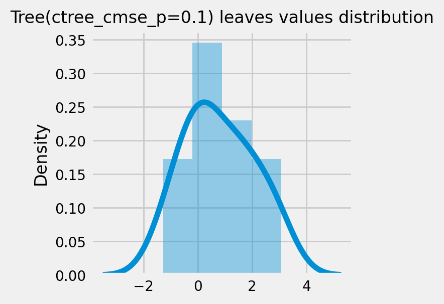
 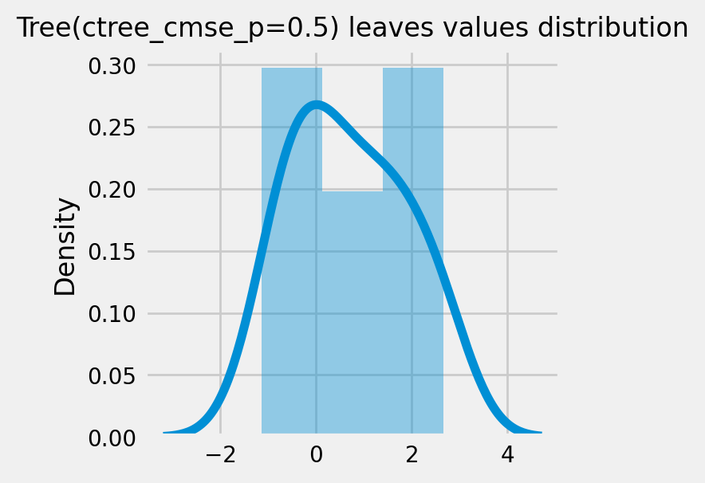
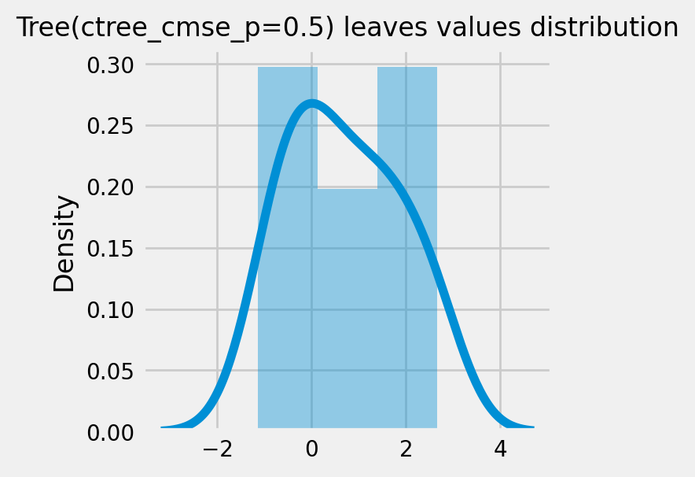
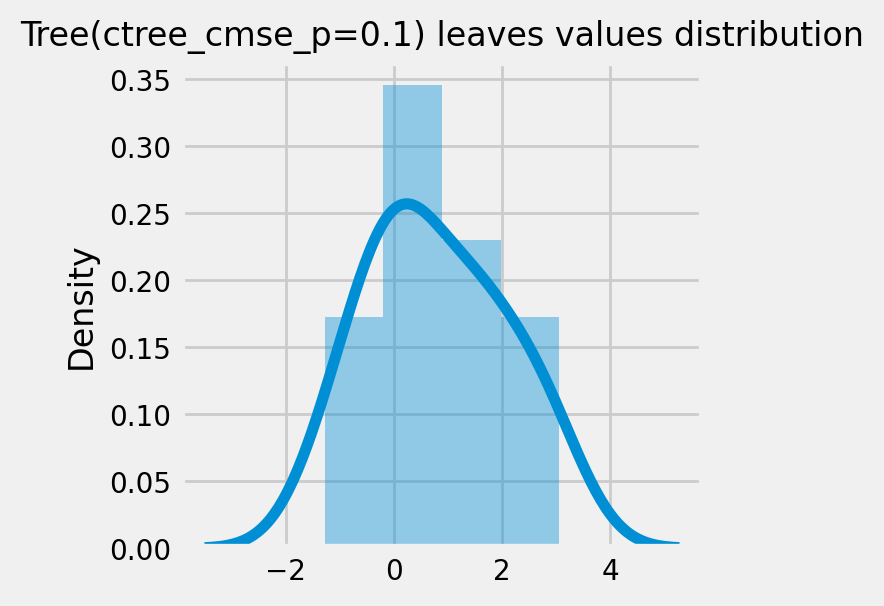
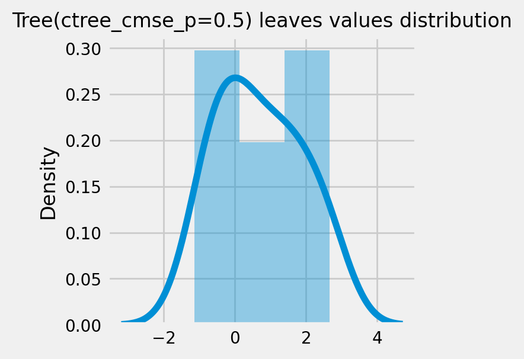
CausalRandomForestRegressor#
cforests = {
'cforest_mse': {
'params':
dict(criterion='standard_mse',
control_name=0,
min_impurity_decrease=0,
min_samples_leaf=400,
groups_penalty=0.,
groups_cnt=True),
},
'cforest_cmse': {
'params':
dict(
criterion='causal_mse',
control_name=0,
min_samples_leaf=400,
groups_penalty=0.,
groups_cnt=True,
),
},
'cforest_cmse_p=0.5': {
'params':
dict(
criterion='causal_mse',
control_name=0,
min_samples_leaf=400,
groups_penalty=0.5,
groups_cnt=True,
),
},
'cforest_cmse_p=0.5_md=3': {
'params':
dict(
criterion='causal_mse',
control_name=0,
max_depth=3,
min_samples_leaf=400,
groups_penalty=0.5,
groups_cnt=True,
),
},
}
# Model treatment effect
for cforest_name, cforest_info in cforests.items():
print(f"Fitting: {cforest_name}")
cforest = CausalRandomForestRegressor(**cforest_info['params'])
cforest.fit(X=df_train[feature_names].values,
treatment=df_train['treatment'].values,
y=df_train['outcome'].values)
cforests[cforest_name].update({'model': cforest})
df_result[cforest_name] = cforest.predict(df_test[feature_names].values)
Fitting: cforest_mse
Fitting: cforest_cmse
Fitting: cforest_cmse_p=0.5
Fitting: cforest_cmse_p=0.5_md=3
# See treatment effect estimation with CausalRandomForestRegressor vs true treatment effect
n_obs = 200
indxs = df_result.index.values
np.random.shuffle(indxs)
indxs = indxs[:n_obs]
plt.rcParams.update({'font.size': 10})
pairplot = sns.pairplot(df_result[['treatment_effect', *list(cforests)]])
pairplot.fig.suptitle(f"CausalRandomForestRegressor. Test sample size: {n_obs}" , y=1.02)
plt.show()

df_qini = qini_score(df_result,
outcome_col='outcome',
treatment_col='is_treated',
treatment_effect_col='treatment_effect')
df_qini.sort_values(ascending=False)
cforest_cmse_p=0.5_md=3 0.342660
cforest_cmse_p=0.5 0.329391
cforest_mse 0.314060
cforest_cmse 0.292371
ctree_cmse 0.234977
ctree_cmse_p=0.5 0.228068
ctree_cmse_p=0.1 0.226806
ctree_cmse_p=0.25 0.226301
ctree_mse 0.226242
Random 0.000000
dtype: float64
Qini chart#
plot_qini(df_result,
outcome_col='outcome',
treatment_col='is_treated',
treatment_effect_col='treatment_effect',
figsize=(8,8)
)

df_qini = qini_score(df_result,
outcome_col='outcome',
treatment_col='is_treated',
treatment_effect_col='treatment_effect')
df_qini.sort_values(ascending=False)
cforest_cmse_p=0.5_md=3 0.342660
cforest_cmse_p=0.5 0.329391
cforest_mse 0.314060
cforest_cmse 0.292371
ctree_cmse 0.234977
ctree_cmse_p=0.5 0.228068
ctree_cmse_p=0.1 0.226806
ctree_cmse_p=0.25 0.226301
ctree_mse 0.226242
Random 0.000000
dtype: float64
The cumulative gain of the true treatment effect in each population#
plot_gain(df_result,
outcome_col='outcome',
treatment_col='is_treated',
treatment_effect_col='treatment_effect',
n = n_test
)

The cumulative difference between the mean outcomes of the treatment and control groups in each population#
plot_gain(df_result,
outcome_col='outcome',
treatment_col='is_treated',
n = n_test
)

Meta-Learner Algorithms#
X_train = df_train[feature_names].values
X_test = df_test[feature_names].values
# learner - DecisionTreeRegressor
# treatment learner - LinearRegression()
learner_x = BaseXRegressor(learner=DecisionTreeRegressor(),
treatment_effect_learner=LinearRegression())
learner_s = BaseSRegressor(learner=DecisionTreeRegressor())
learner_t = BaseTRegressor(learner=DecisionTreeRegressor(),
treatment_learner=LinearRegression())
learner_dr = BaseDRRegressor(learner=DecisionTreeRegressor(),
treatment_effect_learner=LinearRegression())
learner_x.fit(X=X_train, treatment=df_train['treatment'].values, y=df_train['outcome'].values)
learner_s.fit(X=X_train, treatment=df_train['treatment'].values, y=df_train['outcome'].values)
learner_t.fit(X=X_train, treatment=df_train['treatment'].values, y=df_train['outcome'].values)
learner_dr.fit(X=X_train, treatment=df_train['treatment'].values, y=df_train['outcome'].values)
df_result['learner_x_ite'] = learner_x.predict(X_test)
df_result['learner_s_ite'] = learner_s.predict(X_test)
df_result['learner_t_ite'] = learner_t.predict(X_test)
df_result['learner_dr_ite'] = learner_dr.predict(X_test)
cate_dr = learner_dr.predict(X)
cate_x = learner_x.predict(X)
cate_s = learner_s.predict(X)
cate_t = learner_t.predict(X)
cate_ctrees = [info['model'].predict(X) for _, info in ctrees.items()]
cate_cforests = [info['model'].predict(X) for _, info in cforests.items()]
model_cate = [
*cate_ctrees,
*cate_cforests,
cate_x, cate_s, cate_t, cate_dr
]
model_names = [
*list(ctrees), *list(cforests),
'X Learner', 'S Learner', 'T Learner', 'DR Learner']
plot_gain(df_result,
outcome_col='outcome',
treatment_col='is_treated',
n = n_test
)
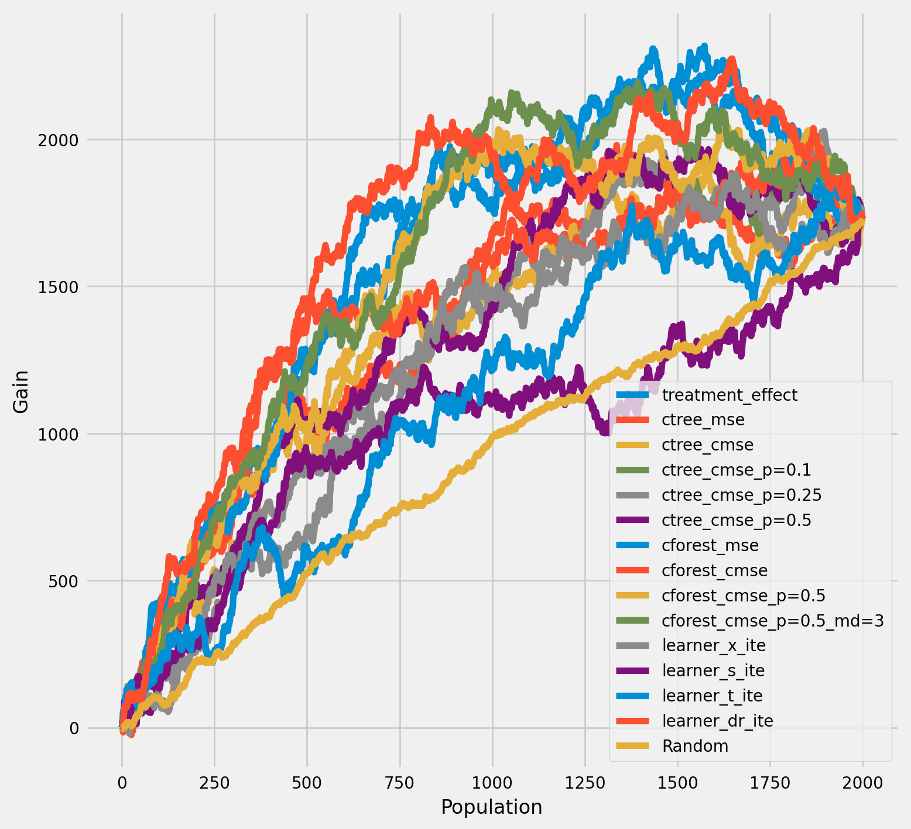
rows = 2
cols = 7
row_idxs = np.arange(rows)
col_idxs = np.arange(cols)
ax_idxs = np.dstack(np.meshgrid(col_idxs, row_idxs)).reshape(-1, 2)
fig, ax = plt.subplots(rows, cols, figsize=(20, 10))
plt.rcParams.update({'font.size': 10})
for ax_idx, cate, model_name in zip(ax_idxs, model_cate, model_names):
col_id, row_id = ax_idx
cur_ax = ax[row_id, col_id]
cur_ax.scatter(tau, cate, alpha=0.3)
cur_ax.plot(tau, tau, color='C2', linewidth=2)
cur_ax.set_xlabel('True ITE')
cur_ax.set_ylabel('Estimated ITE')
cur_ax.set_title(model_name)
cur_ax.set_xlim((-4, 6))

The cumulative difference between the mean outcomes of the treatment and control groups in each population#
plot_gain(df_result,
outcome_col='outcome',
treatment_col='is_treated',
n = n_test,
figsize=(9, 9),
)
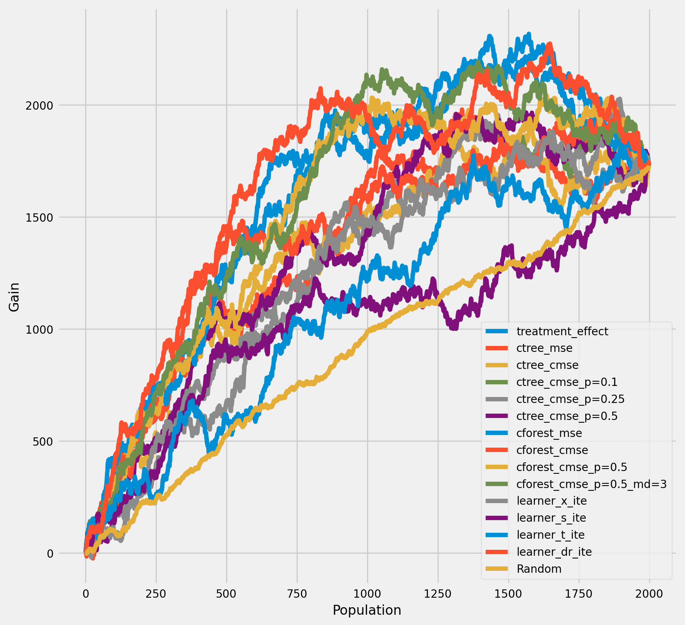
Qini chart#
plot_qini(df_result,
outcome_col='outcome',
treatment_col='is_treated',
treatment_effect_col='treatment_effect',
)

df_qini = qini_score(df_result,
outcome_col='outcome',
treatment_col='is_treated',
treatment_effect_col='treatment_effect')
df_qini.sort_values(ascending=False)
cforest_cmse_p=0.5_md=3 0.342660
cforest_cmse_p=0.5 0.329391
cforest_mse 0.314060
learner_dr_ite 0.308912
cforest_cmse 0.292371
ctree_cmse 0.234977
ctree_cmse_p=0.5 0.228068
ctree_cmse_p=0.1 0.226806
ctree_cmse_p=0.25 0.226301
ctree_mse 0.226242
learner_x_ite 0.102460
learner_s_ite 0.078386
learner_t_ite 0.059568
Random 0.000000
dtype: float64
Bootstrap confidence intervals for individual treatment effects#
alpha=0.05
tree = CausalTreeRegressor(criterion='causal_mse', control_name=0, min_samples_leaf=200, alpha=alpha)
# For time measurements
for n_jobs in (4, mp.cpu_count() - 1):
for n_bootstraps in (10, 50, 100):
print(f"n_jobs: {n_jobs} n_bootstraps: {n_bootstraps}" )
tree.bootstrap_pool(
X=X,
treatment=w,
y=y,
n_bootstraps=n_bootstraps,
bootstrap_size=10000,
n_jobs=n_jobs,
verbose=False
)
n_jobs: 4 n_bootstraps: 10
100%|██████████████████████████████████████████████████████████████████████████████████████████████████████████████████████████████████████████████████████████████████████████████████████████| 10/10 [00:00<00:00, 18.11it/s]
Function: bootstrap_pool Kwargs:{'n_bootstraps': 10, 'bootstrap_size': 10000, 'n_jobs': 4, 'verbose': False} Elapsed time: 0.6943
n_jobs: 4 n_bootstraps: 50
100%|██████████████████████████████████████████████████████████████████████████████████████████████████████████████████████████████████████████████████████████████████████████████████████████| 50/50 [00:02<00:00, 21.56it/s]
Function: bootstrap_pool Kwargs:{'n_bootstraps': 50, 'bootstrap_size': 10000, 'n_jobs': 4, 'verbose': False} Elapsed time: 2.3997
n_jobs: 4 n_bootstraps: 100
100%|████████████████████████████████████████████████████████████████████████████████████████████████████████████████████████████████████████████████████████████████████████████████████████| 100/100 [00:04<00:00, 20.93it/s]
Function: bootstrap_pool Kwargs:{'n_bootstraps': 100, 'bootstrap_size': 10000, 'n_jobs': 4, 'verbose': False} Elapsed time: 4.8567
n_jobs: 11 n_bootstraps: 10
100%|██████████████████████████████████████████████████████████████████████████████████████████████████████████████████████████████████████████████████████████████████████████████████████████| 10/10 [00:00<00:00, 21.95it/s]
Function: bootstrap_pool Kwargs:{'n_bootstraps': 10, 'bootstrap_size': 10000, 'n_jobs': 11, 'verbose': False} Elapsed time: 0.7243
n_jobs: 11 n_bootstraps: 50
100%|██████████████████████████████████████████████████████████████████████████████████████████████████████████████████████████████████████████████████████████████████████████████████████████| 50/50 [00:01<00:00, 30.00it/s]
Function: bootstrap_pool Kwargs:{'n_bootstraps': 50, 'bootstrap_size': 10000, 'n_jobs': 11, 'verbose': False} Elapsed time: 1.8125
n_jobs: 11 n_bootstraps: 100
100%|████████████████████████████████████████████████████████████████████████████████████████████████████████████████████████████████████████████████████████████████████████████████████████| 100/100 [00:03<00:00, 29.97it/s]
Function: bootstrap_pool Kwargs:{'n_bootstraps': 100, 'bootstrap_size': 10000, 'n_jobs': 11, 'verbose': False} Elapsed time: 3.5168
te, te_lower, te_upper = tree.fit_predict(
X=df_train[feature_names].values,
treatment=df_train["treatment"].values,
y=df_train["outcome"].values,
return_ci=True,
n_bootstraps=500,
bootstrap_size=5000,
n_jobs=mp.cpu_count() - 1,
verbose=False)
100%|████████████████████████████████████████████████████████████████████████████████████████████████████████████████████████████████████████████████████████████████████████████████████████| 500/500 [00:10<00:00, 49.86it/s]
Function: bootstrap_pool Kwargs:{'n_bootstraps': 500, 'bootstrap_size': 5000, 'n_jobs': 11, 'verbose': False} Elapsed time: 10.1793
plt.hist(te_lower, color='red', alpha=0.3, label='lower_bound')
plt.axvline(x = 0, color = 'black', linestyle='--', lw=1, label='')
plt.legend()
plt.show()
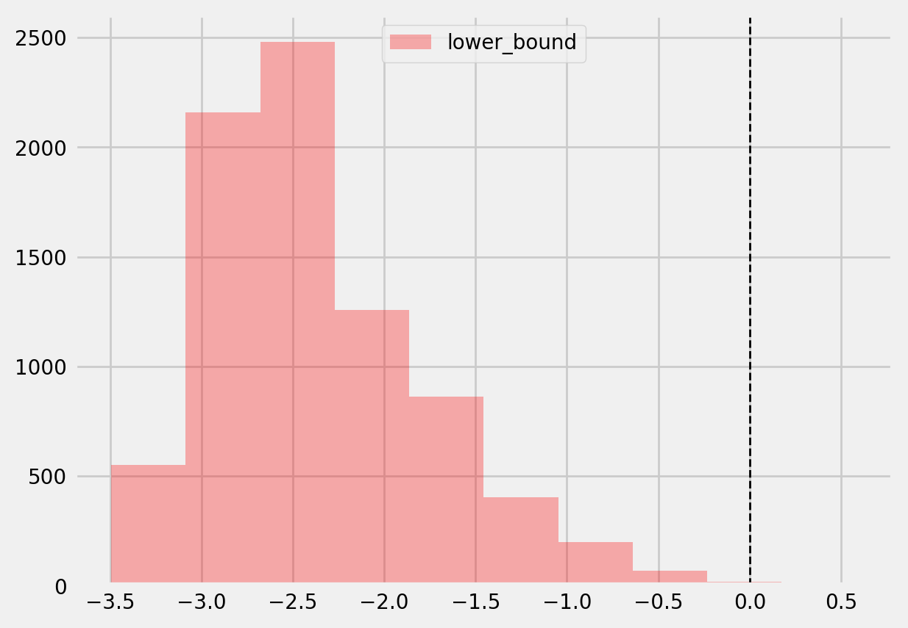
# Significant estimates for negative and positive individual effects
# Default alpha = 0.05
bootstrap_neg = te[(te_lower < 0) & (te_upper < 0)]
bootstrap_pos = te[(te_lower > 0) & (te_upper > 0)]
print(bootstrap_neg.shape, bootstrap_pos.shape)
(0,) (6,)
plt.hist(bootstrap_neg)
plt.title(f'Bootstrap-based subsample of significant negative ITE. alpha={alpha}')
plt.show()
plt.hist(bootstrap_pos)
plt.title(f'Bootstrap-based subsample of significant positive ITE alpha={alpha}')
plt.show()
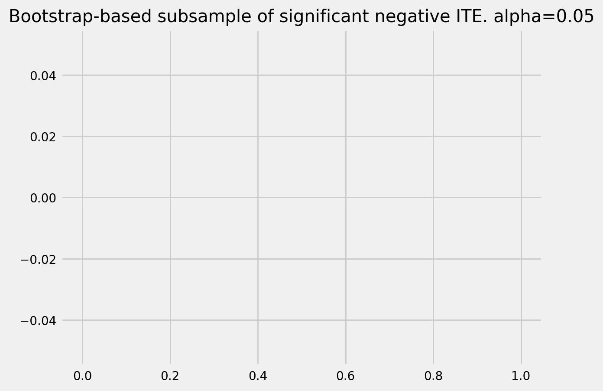

Average treatment effect#
tree = CausalTreeRegressor(criterion='causal_mse', control_name=0, min_samples_leaf=200, alpha=alpha)
te, te_lb, te_ub = tree.estimate_ate(X=X, treatment=w, y=y)
print('ATE:', te, 'Bounds:', (te_lb, te_ub ), 'alpha:', alpha)
ATE: 0.8028852136361658 Bounds: (0.8025595528112953, 0.8032108744610363) alpha: 0.05
CausalRandomForestRegressor ITE std#
crforest = CausalRandomForestRegressor(criterion="causal_mse", min_samples_leaf=200,
control_name=0, n_estimators=50, n_jobs=mp.cpu_count()-1)
crforest.fit(X=df_train[feature_names].values,
treatment=df_train['treatment'].values,
y=df_train['outcome'].values
)
CausalRandomForestRegressor(min_samples_leaf=200, n_estimators=50, n_jobs=11)
crforest_te_pred = crforest.predict(df_test[feature_names])
crforest_test_var = crforest.calculate_error(X_train=df_train[feature_names].values,
X_test=df_test[feature_names].values)
crforest_test_std = np.sqrt(crforest_test_var)
plt.hist(crforest_test_std)
plt.title("CausalRandomForestRegressor unbiased sampling std")
plt.show()